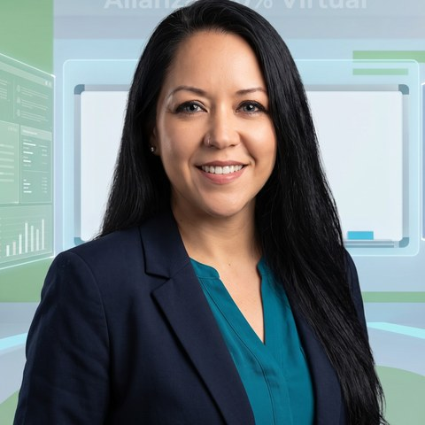

Virtual no significa grabado ni automático. Significa un profesor real, frente a ti, en un grupo reducido, cada sesión.
Cada sesión es sincrónica, con tu profesor y tus compañeros conectados al mismo tiempo. Interacción oral desde el primer día.
Nuestro equipo docente está formado en Français Langue Étrangère y sigue la metodología de la red Alliance Française y el Marco Común Europeo.
Suficientes para conversar, pocos para que nadie se esconda. Cada alumno habla en todas las sesiones.
Chiapas, cualquier estado de México o el extranjero. Solo necesitas conexión y ganas de hablar francés.
Elige con quién quieres aprender. Cada profesor tiene su propio estilo — encuentra el que mejor conecta contigo.
Alejandro Avendaño
Conversación y fonética
Alejandro cree que el francés se aprende hablando, no memorizando reglas. Sus clases están llenas de diálogos reales y ejercicios de pronunciación que te quitan el miedo a hablar desde la primera semana.
Alejandra Estrada
Metodología comunicativa
Alejandra estructura cada sesión como una conversación con propósito: aprendes gramática resolviendo situaciones de la vida real. Su paciencia y seguimiento cercano la hacen ideal para quienes empiezan desde cero.
Fanny Franco
Preparación DELF/DALF
Fanny acompaña a sus estudiantes hacia la certificación oficial DELF/DALF con simulacros de examen y retroalimentación honesta y detallada. Si tu meta es un diploma o una fecha límite, ella te lleva ahí con estrategia.
Miguel Tillero
Fundador · dirección académica
Miguel fundó la Alliance Française San Cristóbal con la convicción de que aprender francés en línea puede sentirse tan cercano como en un salón físico. Combina la visión del programa con clases directas para quienes quieren aprender con el equipo fundador.

Lucía Rangel
Francés para niños y adolescentes
Lucía diseña cada clase como un juego con intención pedagógica: canciones, historias y actividades que mantienen a los más pequeños enganchados mientras absorben el idioma de forma natural.